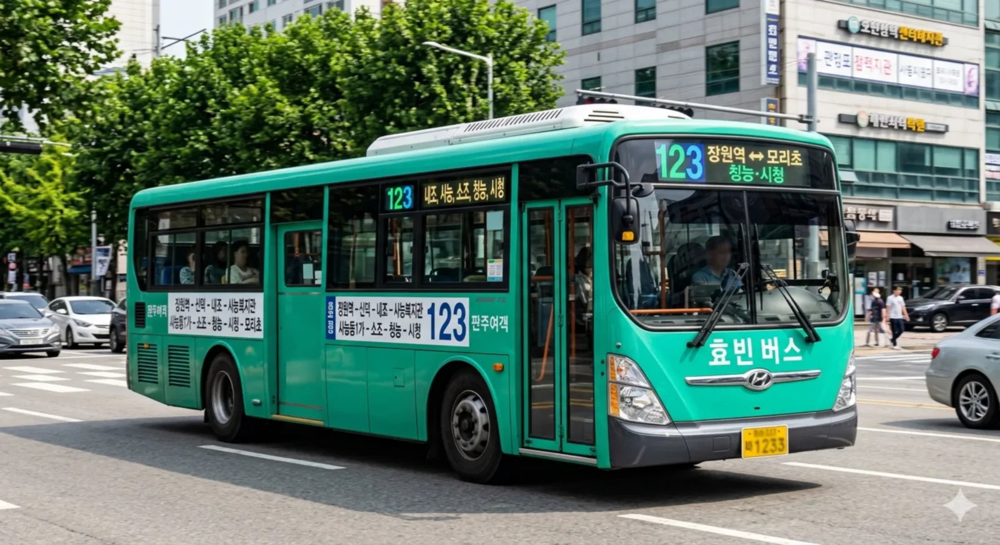

분류: 효빈광역시의 시내버스 | 효빈광역시 지선버스
목차
- 1. 120번대 노선 목록
- 2. 효빈 버스 121, 211
- 3. 효빈 버스 123, 213
- 4. 효빈 버스 219, 129
1. 120번대 노선 목록
효빈광역시 지선버스 중 120번대(중구·서구 권역 연계) 노선들의 통합 문서이다. 각 노선 번호를 클릭하면 해당 문단으로 즉시 이동한다.
| 노선 번호 | 기점 | ↔ | 종점 | 운수사 | 배차간격 | 비고 |
| 121 / 211 | 효빈역 | ↔ | 신덕역 | 판주여객 | 15~20분 | 중구 중심부 최단거리 연계 |
| 123 / 213 | 장원역 | ↔ | 모리초 (시청) | 판주여객 | 20~28분 | 시오리코 버스 |
| 219 / 129 | 청덕공원 | ↔ | 장원역 | 남주여객 | 23~30분 | 서구 ↔ 중구 연계 지선 |
2. 효빈 버스 121, 211
효빈 버스 121은 효빈광역시 중구 효빈역에서 출발하여 중구청, 중앙로를 거쳐 신덕역까지 운행하는 지선버스 노선이다. 반대 방향으로 운행하는 역순 노선은 211번이다.
2.1. 노선 정보
 |
| 121번 버스 운행 모습 |
| 🚌 효빈 버스 121 / 211 | |||||
| 기점 | 효빈역 (121번 기준) | 종점 | 신덕역 (121번 기준) | ||
| 121번 (하행) | 첫차 | 05:10 | 211번 (상행) | 첫차 | 05:15 |
| 막차 | 22:50 | 막차 | 22:55 | ||
| 배차간격 | 평일 15분 / 주말 20분 | ||||
| 운수사명 | 판주여객 | 인가대수 | 10대 | ||
| 경유지 | 효빈역 ↔ 중구청 ↔ 중앙로역 ↔ 신덕역 | ||||
2.2. 정류장 목록
2.3. 특징 및 여담
- 효빈광역시 중구의 핵심 환승역인 효빈역과 신덕역을 최단 거리로 이어주는 혜자 노선이다. 지하철로 이동할 경우 환승을 거쳐야 하거나 굴곡이 생기는 구간을 직선으로 관통하기 때문에 출퇴근 시간대에는 가축수송이 일상화되어 있다.
이럴 거면 간선버스로 승격시키지 그래? - 번호 체계가 대칭으로 부여되는 효빈시 지선버스 규칙에 따라, 효빈역에서 신덕역으로 가는 하행은 121번, 신덕역에서 효빈역으로 돌아오는 상행은 211번을 달고 운행한다. 초행길이라면 번호를 헷갈려 반대 방향으로 타는 낭패를 겪지 않도록 주의하자.
3. 효빈 버스 123, 213
효빈 버스 123은 효빈광역시 중구 장원역과 북구 진희동 모리초등학교(시청 인근)를 연결하는 지선버스 노선이다. 역순으로 운행하는 반대 방향 노선은 213번이다.
3.1. 노선 정보
 |
| 123번 버스 운행 모습 |
| 🚌 효빈 버스 123 / 213 | |||||
| 기점 | 장원역 (123번 기준) | 종점 | 모리초 (123번 기준) | ||
| 123번 (하행) | 첫차 | 05:12 | 213번 (상행) | 첫차 | 05:19 |
| 막차 | 22:34 | 막차 | 22:40 | ||
| 배차간격 | 평일 20분 / 주말 28분 | ||||
| 운수사명 | 판주여객 | 인가대수 | 8대 | ||
| 경유지 | 장원역 ↔ 신덕역 ↔ 내조역 ↔ 사능복지관 ↔ 사능동1가 ↔ 소조역 ↔ 청능역 ↔ 시청역(모리초) | ||||
3.2. 정류장 목록
3.3. 특징 및 여담
- 중구 남부의 장원역과 북구 행정의 중심지인 시청(모리초) 일대를 지그재그로 연결하는 생활 밀착형 지선 노선이다.
- 배차간격이 평일 기준 20분, 주말에는 30분에 육박할 정도로 다소 긴 편이므로, 버스 어플이나 실시간 도착 정보를 확인하지 않고 무작정 정류장에 나갔다가는 길바닥에서 멍하니 시간을 버리게 된다.
놓치면 눈물 난다 - 여담: 지선버스의 3세대 고유 도색 색상(● Jade Green, #37B484)이 러브 라이브! 니지가사키 학원 스쿨 아이돌 동호회의 멤버 미후네 시오리코의 이미지 컬러와 매우 흡사하여 동호인들과 서브컬처 팬들 사이에서는 일명 '시오리코 버스'라는 애칭으로 불린다.[1]
4. 효빈 버스 219, 129
효빈 버스 219는 효빈광역시 서구 청덕동 청덕공원에서 출발하여 과진동, 효빈대학교, 사능동을 거쳐 중구 장원역까지 운행하는 지선버스 노선이다. 반대 방향인 장원역에서 청덕공원으로 운행하는 역방향 노선은 129번이다.
4.1. 노선 정보
 |
| 219번 버스 운행 모습 |
| 🚌 효빈 버스 219 / 129 | |||||
| 기점 | 청덕공원 (219번 기준) | 종점 | 장원역 (219번 기준) | ||
| 219번 (하행) | 첫차 | 05:23 | 129번 (상행) | 첫차 | 05:34 |
| 막차 | 23:01 | 막차 | 23:09 | ||
| 배차간격 | 평일 23분 / 주말 30분 | ||||
| 운수사명 | 남주여객 | 인가대수 | 6대 | ||
| 경유지 | 청덕공원 ↔ 과진중앙 ↔ 과진역 ↔ 당선역 ↔ 효빈대 ↔ 사능동 ↔ 효빈역 ↔ 장원역 | ||||
4.2. 정류장 목록
▼ 219번 (청덕공원 → 장원역)
4.3. 특징 및 여담
- 서구 청덕동, 과진동 일대의 주거단지와 효빈대학교 대학가, 그리고 중구의 중심 권역인 효빈역과 장원역을 알짜배기로 이어주는 노선이다. 통학하는 효빈대 대학생들과 서구 주민들의 중구 진입 수요를 동시에 책임지고 있다.
- 운행 업체는 서구 권역을 주력으로 하는 남주여객이며, 인가대수가 단 6대에 불과해 배차간격이 평일 23분, 주말에는 30분까지 늘어난다.
이쯤 되면 버스가 아니라 기다림의 미학이다. - 역방향 노선: 서구에서 출발하여 중구로 들어오는 하행은 219번, 반대로 중구 장원역에서 서구 청덕공원으로 나가는 상행은 129번으로 분리되어 운행한다.
[1] 실제로 색상 코드가 미묘하게 비슷하다는 분석글이 커뮤니티에 올라온 적이 있다.